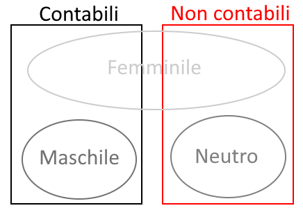

Areale dei dialetti di cui si parla in questa pagina
Questa pagina è un sunto delle principali particolarità linguistiche dei dialetti mediani parlati nell’Umbria meridionale. Principalmente ci si riferirà al gruppo di dialetti centrali, molto simili tra loro, parlati nelle aree di Terni, Spoleto e Foligno; gli altri, specie il nursino, spesso rientrano male nella spiegazione generica, ma nonostante le varie differenze, in genere sottigliezze fonologiche e fonetiche, si possono bene trattare in comune come un gruppo linguistico compatto, distinto in particolare da quello settentrionale di area perugina. Talora, quando si farà riferimento a delle particolarità di una o dell’altra variante, si potrebbero usare delle abbreviazioni, ovvero: cas.ciano, fol.ignate, nar.nese, nur.sino, spol.etino, ter.nano.
1. Fonologia e grafiaLa seguente tabella riporta su ognuna delle colonne il grafema utilizzato, il fonema corrispondente e un esempio di parola con il suono. I suoni sono indicati con l’Alfabeto Fonetico Internazionale. Seguono spiegazioni ed esplicazioni, con note di fonologia storica. Se non specificato, la pronuncia riportata è quella del dialetto ternano.
| grafema | fonema | esempio |
|---|---|---|
| a | /a/ | annu [ˈanːu] |
| b | /b/ | buellu [ˈbːwelːu] |
| ci + a/o/u c + e/i |
/t͡ʃ/ | ciuetta [t͡ʃuˈetːa] cerasa [t͡ʃeˈraːsa] |
| c + a/o/u ch + e/i |
/k/ | cane [ˈkaːne] bache [ˈbːaːke] |
| q | quistu [ˈkwistu] | |
| chj | /c/ | occhju [ˈocːu] |
| d | /d/ | dittu [ˈditːu] |
| e | /ɛ/ | erba [ˈɛrba] |
| /e/ | emo [ˈeːmo] | |
| f | /f/ | fegne [ˈfeɲːe] |
| gi + a/o/u g + e/i |
/d͡ʒ/ | aggià [aˈd͡ʒːa] giju [ˈd͡ʒːiʝːu] |
| g + a/o/u gh + e/i |
/g/ | granne [ˈgranːe] larghezza [larˈget͡sːa] |
| ghj |
/ɟ/ | ghjocu [ˈɟoːcu] |
| gli + a/e/o/u gl + i |
/ʎ/ | gliope [ˈʎːoːpe] (Polino) cavagli [kaˈvaʎːi] |
| gn | /ɲ/ | gnoccu [ˈɲːokːu] |
| i | /i/ | issu [ˈisːu] |
| j | /ʝ/ | jì [ˈʝːi] |
| l | /l/ | lengua [ˈleŋgwa] |
| m | /m/ | matre [ˈmaːtre] |
| n | /n/ | notte [ˈnɔtːe] |
| o | /ɔ/ | otto [ˈɔtːo] |
| /o/ | ora [ˈoːra] | |
| p | /p/ | pica [ˈpiːka] |
| r | /r/ | robba [ˈrɔbːa] |
| s | /s/ | storzà [storˈd͡za] |
| sci + a/o/u sc + e/i |
/ʃ/ | sciacquà [ʃːaˈkːwa] sceje [ˈʃːeʝːe] |
| t | /t/ | tistu [ˈtistu] |
| u | /u/ | urzu [ˈurt͡su] |
| v | /v/ | vinu [ˈviːnu] |
| v | /t͡s/ | zumpu [ˈt͡sːumbu] |
| /d͡z/ | zeta [ˈd͡zːɛːta] |
‹j› rappresenta un fonema palatale, oscillante tra approssimante e fricativo, ma in genere più fricativo, /ʝ/, come in fiju, jocu, sbaju, juttu. Nella pronuncia è solitamente geminato quando è in posizione iniziale o tra vocali, cioè quasi sempre, tranne poche eccezioni come arjì “riandare”.
‹chj› rappresenta l’occlusiva palatale sorda /c/, come in chjamà, occhju. Permane prima di /i/: occhju fa al plurale occhji, al diminutivo ucchjittu, etc. Talora in posizione iniziale /c/ > /ʝ/: chjamà > jamà, chjara > jara, donde in spoletino anche ghjara, ghjesa.
‹ghj› rappresenta l’occlusiva palatale sonora /ɟ/. Questo fonema è diffuso principalmente nelle varianti di Spoleto e Foligno, mentre manca a Terni e in Valnerina. Si potrebbe in molti casi definire una variante di /ʝ/, o viceversa, infatti è sempre in variazione con esso (spol. e fol. agghjo, ghjocu, ghjì, ghjente oppure ajo, jocu, jì, jente), tranne nelle parole che etimologicamente hanno /ʎ/, come fiju, moje, sbaju, fajà ecc.
‹gli› rappresenta l’approssimante laterale /ʎ/. Questo fonema è caratteristico di certi luoghi a contatto con la Sabina (e.g. a Piediluco capurigliu “capezzolo”, a Polino gliope “lupo”), mentre nelle bande settentrionali manca, essendo in tutto sostituito da /ʝ/.
Elencandoli molto rapidamente, alcuni dei tratti più evidenti sono questi:
La metafonesi è un fenomeno di armonia vocalica regressiva, ovvero in cui le vocali di una parola diventano più simili alla vocale finale (si armonizzano) per agevolare la pronuncia. Nei dialetti mediani la metafonesi è causata dalle vocali /i, u/ in fine di parola e consiste nel dittongamento o nell’innalzamento (poiché fisicamente la lingua si innalza) della vocale tonica (e possibilmente di altre). Lo schema più diffuso è questo:
ɛ > e
e > i
ɔ > o
o > u
Dipendendo dalle vocali finali, la metafonesi può creare differenze tra forme di uno stesso lemma, ad esempio:
Nel dialetto di Norcia, le vocali semiaperte /ɛ ɔ/ dittongano invece che innalzarsi: uòrtu, bièju, buònu, muòrtu ma bèlla, bòna, mòrta; ru pèe, ru dènte ma ri pièi, ri diènti; io mèto, io dòrmo ma tu mièti, tu duòrmi. Per le semichiuse, vale sempre niru, suru etc. Nel dialetto di Castelluccio di Norcia si verifica addirittura la monottongazione: pittu, urtu (ter. péttu, órtu).
Il dialetto di Narni non ha praticamente alcun fenomeno di metafonesi: ter. béllu, bónu, sólu, issu, issi, niru, sulu, cojitùru, nui, vui contro nar. bèllu, bònu, sòlu, éssu, éssi, néru, sólu, cojitóru, nói, vói. In questa pagina si riporteranno principalmente le forme metafonetiche, ma va da sé che benché le parole siano le stesse, in narnese non hanno metafonesi.
Una caratteristica delle lingue romanze è l’appartenenza di ogni sostantivo a un genere che ne determina la flessione e l’accordo. Nella maggior parte delle dette lingue sono presenti il genere maschile e il femminile. In molti dialetti mediani e italomeridionali è presente una terza categoria flessiva, che chiameremo neutro. Infatti qui il maschile contiene solo nomi contabili, e il neutro contiene solamente nomi non contabili, e che in italiano se hanno corrispettivi sono maschili: lu fiju, lu buellu, lu monte, lu fiore, lu curbu sono maschili perché sono contabili e determinati, mentre lo vinu, lo piummu, lo ferru, lo magnà, lo sale, lo mele, lo tempu, lo male sono neutri, perché non si possono contare. Ciò vuol dire che uno stesso lemma può essere maschile e neutro con significati diversi: lu pesce indica un animale, mentre lo pesce indica il pesce come pietanza o genericamente (e. g. “il pescato”); lu férru è un attrezzo di ferro, laddove lo fèrro è il ferro come materiale.
Tuttavia oltre ai sostantivi propriamente neutri si accordano al neutro varie parti del discorso:
Quando, inoltre, nelle costruzioni relative ci si riferisce a una proposizione, lo si fa al neutro: non lo saccio do’ è jitu!, mentre se l’oggetto fosse stato maschile: non lu sapeo ’stu fattu!. Lo stesso con i pronomi dimostrativi: questo è quello che vojo, testo non pò stà!
La vocale finale che distingue il neutro, come si è visto, è -o. Questa desinenza è sempre distinta:
Per quanto riguarda i sostantivi, nei dialetti sabini e in area ternana hanno la stessa desinenza -u del maschile: lo vinu, lo granu, l’oju, lo piummu, lo niru. Negli altri dialetti hanno di norma l’uscita distinta dal maschile in -o (che non porta metafonesi!): lo vino, lo grano, l’òjo, a Norcia lo fèro. Comunque, al plurale, ragionevolmente raro, i neutri si comportano semplicemente come maschili: li vini.
| singolare | plurale | |
|---|---|---|
| maschile | fij - u | fij - i fiur - i camerier - i |
| fior - e | ||
| camerier - i | ||
| femminile | fij - a | fij - e nott - e |
| nott - e | ||
| man - o | man - o | |
| neutro | vin - u oppure vin - o | |
| mel - e |
Tra le varie particolarità che si possono enumerare:
| singolare | plurale | |||
|---|---|---|---|---|
| prima di consonante | prima di vocale | prima di consonante | prima di vocale | |
| maschile | lu ’u1 ru2 | l’ j’2 | li ’i1 ri2 | l’ j’2 |
| femminile | la ’a1 | l’ | le ’e1 | l’ |
| neutro | lo ’o1 | l’ | ||
(1) Queste forme, con caduta di l- iniziale, sono tipiche dei dialetti di Spoleto e di Narni (nell’area narnese, in continuità coi dialetti sabini, ’u è anzi usato molto più di lu, praticamente sempre, mentre a Spoleto c’è variazione libera). In questi stessi dialetti, la caduta della consonante permette la formazione delle preposizioni articolate, v. il prossimo paragrafo.
(2) Queste forme sono precipue del nursino. Fino a Cascia invece si usano ancora le forme in l-: lu jupu, li jupi....
| singolare | ||
|---|---|---|
| debole | forte | |
| maschile | un | unu (’nu) |
| femminile | una (’na) | |
L’articolo partitivo è assente, al suo posto si utilizzano costruzioni perifrastiche come un pocu/un pochittu de, ’na ’nticchja de, ’n’ogna de... o l’aggettivo certu (ajo vistu cert’omini “ho visto degli uomini”).
Le preposizioni sono le stesse italiane: de, a, da, in, con, su, per, tra, fra; con, per spesso si abbreviano in co, pe. L’avverbio di luogo llà si può considerare praticamente anche come una nuova preposizione, e viene usato per indicare il concetto di trovarsi presso qualcosa: llà lu focu (presso il fuoco), llà lu furnellu (sul fornello), llà lu muru, llà la piazza, llà casa sua, llà lu furnu (dentro il forno). Lo stesso vale per llì: come va llì casa? (come va in famiglia?).
Talora si fa utilizzo dell’accusativo preposizionale, cioè l’uso di a per marcare l’oggetto di un verbo, se è animato (in genere con enfasi): a issu no l’ajo vistu; mancu m’ha salutatu, a mé!.
Queste forme contratte si usano spesso nei dialetti di area spoletina e narnese. Nelle altre zone rimangono in genere slegate: de lu, pe lu, co lu... eccetera. Nel caso degli articoli in forma l’, in tutti i dialetti è bene o male indifferente usare la forma unita dell’ o slegata de l’.
| ’u | i | ’a | ’e | l’ | |
|---|---|---|---|---|---|
| de | dû | dî | dâ | dê | de l’ |
| a | au / û | ai / î | â | ae / ê | all’ |
| da | dû | dî | dâ | dê | dall’ |
| co | cû | chî | câ | chê | coll’ |
| pe | pû | pî | pâ | pe’ le | pell’ |
I dialetti umbri hanno tre gradi di dimostrativi, ovvero quistu, quillu e tistu (oppure quissu) “questo, quello, codesto”.
Quistu indica qualcosa di vicino a chi parla, ed equivale all’italiano “questo”. Quando è un articolo si può abbreviare per aferesi della prima sillaba: ’stu locu, ’sto latte, ’st’antru. L’avverbio di modo corrispondente è accucì, cucì, “così, in questo modo”. Gli avverbi di luogo corrispondenti sono qui, qua (anche icquì, icquà). Il presentativo corrispondente è ècco “ecco qui”.
| singolare | plurale | |||
|---|---|---|---|---|
| prima di consonante | prima di vocale | prima di consonante | prima di vocale | |
| maschile | quistu | quist’ | quisti | quist’ |
| femminile | questa | quest’ | queste | quest’ |
| neutro | questo | quest’ | ||
Tistu indica qualcosa di vicino a chi ascolta, e corrisponde all’italiano “codesto”. L’avverbio di modo corrispondente è attucì, tucì, “in codesto modo” (in uso almeno a Terni). Il presentativo corrispondente è èsto “ecco costì” (cfr. nel Pianto della Madonna, quando Cristo dice a Giovanni: “Ioanni, èsto mea mate: / tollila en caritate”; Maria in questa situazione sta prossima a quest’ultimo, perciò Jacopone utilizzò èsto).
| singolare | plurale | |||
|---|---|---|---|---|
| prima di consonante | prima di vocale | prima di consonante | prima di vocale | |
| maschile | tistu | tist’ | tisti | tist’ |
| femminile | testa | test’ | teste | test’ |
| neutro | testo | test’ | ||
Una forma alternativa di origine meridionale (in napoletano chisso, in siciliano chissu), diffusa nella Valnerina, è quissu, e ha sempre lo stesso significato.
| singolare | plurale | |||
|---|---|---|---|---|
| prima di consonante | prima di vocale | prima di consonante | prima di vocale | |
| maschile | quissu | quiss’ | quissi | quiss’ |
| femminile | quessa | quess’ | quesse | quess’ |
| neutro | quesso | quess’ | ||
Quillu indica qualcosa di distante da chi parla e da chi ascolta, e corrisponde all’italiano “quello”. L’avverbio di modo corrispondente è allucì, “in quel modo”. Il presentativo corrispondente è ello “ecco lì”. Gli avverbi di luogo corrispondenti sono lì, là (talora illì, illà). Si comporta in modo molto simile all’articolo determinativo:
| singolare | plurale | |||
|---|---|---|---|---|
| prima di consonante | prima di vocale | prima di consonante | prima di vocale | |
| maschile | quillu | quill’ | quilli | quill’ |
| femminile | quella | quell’ | quelle | quell’ |
| neutro | quello | quell’ | ||
A Terni e Narni se quillu è un aggettivo si può abbreviare in ’llu: ’llu cane, ’llo curre, ’lla palla.
Benché Narni manchi del tutto (?) di metafonesi, oltre che questu - quellu - testu vi si trovano anche le forme quistu - quillu - tistu.
A Cascia quistu - quissu - quillu suonano vistu - vissu - villu.
A Norcia si usano solo istu e quiju (oppure iju). Per “codesto” in nursino non c’è un corrispettivo esatto, come poi generalmente nell’italiano moderno parlato fuor di Toscana.
L’aggettivo possessivo si usa in genere solo in seguito al sostantivo. Per la terza persona plurale si utilizza lo stesso possessivo della terza persona singolare, siu: la casa sia può voler dire “la sua casa” e “la loro casa”.
| maschile/neutro | femminile | |||
|---|---|---|---|---|
| singolare | plurale | singolare | plurale | |
| 1a persona singolare | miu | mia | mia | mie |
| 2a persona singolare | tuu tiu | tua tia | tua tia | tue tie |
| 3a persona singolare | suu siu | sua sia | sua sia | sue sie |
| 1a persona plurale | nostru | nostri | nostra | nostre |
| 2a persona plurale | vostru | vostri | vostra | vostre |
| 3a persona plurale | suu siu | sua sia | sua sia | sue sie |
Le forme in -i- tiu, siu invece che tuu, suu sono tipiche del ternano.
Mia, tua, sua sono anche singolari maschili: amicu mia, poru cane mia.
A Narni il plurale maschile suona mii, tui, sui (forma rara negli altri dialetti).
Quando il possessivo si riferisce a un nome di parentela, viene aggiunto come particella atona: fratimu, mojima, patritu, sorite “mio fratello, mia moglie, tuo padre, le tue sorelle”. Nel dialetto moderno prevale però la forma toscana e laziale ’mi sorella etc. La forma riferentesi a una terza persona è rara, ma si trova ad esempio nello spoletino: ziesu “suo zio” (piuttosto si direbbe in genere ziu suu).
| maschile | femminile | |||
|---|---|---|---|---|
| singolare | plurale | singolare | plurale | |
| 1a persona singolare | -mu | -mi | -ma | -me |
| 2a persona singolare | -tu | -ti | -ta | -te |
Ji/je si usa per tutte le terze persone, indipendentemente anche dal genere: ji dico può significare “gli dico”, “le dico” o “dico loro”.
| soggetto | oggetto | obliquo | termine | riflessivo | |
|---|---|---|---|---|---|
| 1a persona singolare | io | me | mé | me | me |
| 2a persona singolare | tu | te | té | te | te |
| 3a persona singolare | issu (m.) essa (f.) | lu (m.) la (f.) lo (n.) | issu (m.) essa (f.) | ji, je | se |
| 1a persona plurale | nui | ci, ce | nui | ci, ce | ci, ce |
| 2a persona plurale | vui | ve | vui | ve | ve |
| 3a persona plurale | issi (m.) esse (f.) | li (m.) le (f.) | issi (m.) esse (f.) | ji, je | se |
In folignate, piuttosto che issu/essa, issi/esse si usano spesso lu’/lia, loro.
Nui e vui hanno anche le forme rafforzate nuantri, vuantri (noialtri, voialtri).
La particella -ne si può aggiungere a qualsiasi parola tronca con valore puramente ritmico: no > none, tu > tune, magnà > magnane etc.
La coniugazione che si darà di seguito è massimamente valida per i dialetti del gruppo centrale Terni - Spoleto - Foligno. Per non appesantire la pagina, gli approfondimenti sui verbi del narnese e del nursino sono su questa altra pagina supplementare. La I coniugazione corrisponde alla prima italiana. La II e la III coniugazione, se non in infinito e participio passato, sono fuse (fenomeno tipico del Mezzogiorno; come in napoletano chiagnimmo e partimmo, in umbro piagnemo, partemo). L’unico a conservarle separate è il narnese (piagnemo, partimo). Il dialetto nursino tende ad unificazioni ancora più radicali (piagnimo, partimo ma anche lavimo “noi laviamo”). Segue la declinazione di amà, venne e partì. Le desinenze hanno l’accento grafico solo quando portano rizoatonia al verbo (ovvero spostano l’accento dalla radice).
| I | II | III | |
|---|---|---|---|
| io | am - o | venn - o | part - o |
| tu | am - i | vinn - i | part - i |
| issu | am - a | venn - e | part - e |
| nui | am - àmo | venn - émo | part - émo |
| vui | am - àte | venn - éte | part - éte |
| issi | am - ono | venn - ono | part - ono |
Dove ci sono due forme, quella in -e- è tipica di Terni, quella in -i- di Spoleto e Foligno.
| I | II | III | |
|---|---|---|---|
| io | am - ào | venn - éo venn - ìo | part - éo part - ìo |
| tu | am - àï | crid - ìï | part - ìï |
| issu | am - àa | venn - éa venn - ìa | part - éa part - ìa |
| nui | am - eàmo am - ïàmo | venn - eàmo venn - ïàmo | part - eàmo part - ïàmo |
| vui | am - eàte am - ïàte | venn - eàte venn - ïàte | part - eàte part - ïàte |
| issi | am - àono | venn - éono venn - ìono | part - éono part - ìono |
| I | II | III | |
|---|---|---|---|
| io | am - ài | venn - étti | part - étti |
| tu | am - àsti | crid - ìsti | part - ìsti |
| issu | am - ò | venn - étte | part - étte |
| nui | am - àssimo | venn - éssimo | part - éssimo |
| vui | am - àssivo | venn - éssimo | part - éssivo |
| issi | am - òrno | venn - éttero | part - éttero |
Nel caso di verbi col passato remoto forte (tra quelli particolarmente diversi dall’italiano standard sono volé > vòrze, vinì > vìnne, vedé > vìdde, métte > mésse, spànne > spàse, créde > crése):
| I - II - III | |
|---|---|
| io | pianz - i |
| issu | pianz - e |
| issi | pianz - ero |
La terza persona plurale si può abbreviare in -arò, -erò: amarò, parterò (v. per entrambi i fatti la coniugazione di avé).
| I | II | III | |
|---|---|---|---|
| io | am - aràjo am - aràco (ter.) | venn - eràjo venn - eràco (ter.) | part - eràjo part - eràco (ter.) |
| tu | am - arài | venn - erài | part - erài |
| issu | am - arà | venn - erà | part - erà |
| nui | am - arémo | venn - erémo | part - erémo |
| vui | am - aréte | venn - eréte | part - eréte |
| issi | am - arònno am - arò | venn - erònno venn - erò | part - erònno part - erò |
Alcuni verbi frequenti di II e di III oscillano in verità tra la forma in -a e quella in -i: faccia = facci, daca = dachi, pozza = pozzi. La distinzione tra indicativo e congiuntivo in I e II persona plurale esisteva in antichità, ma ad oggi le forme sono quelle indicative.
| I | II | III | |
|---|---|---|---|
| io | am - i | venn - a | part - a |
| tu | am - i | venn - a | part - a |
| issu | am - i | venn - a | part - a |
| nui | am - àmo | venn - émo | part - émo |
| issu | am - àte | venn - éte | part - éte |
| issi | am - ino | venn - ano | part - ano |
Con l’avverbio non può formare una sorta di imperativo negativo: non ridissi!, equivalente a non ride!.
| I | II | III | |
|---|---|---|---|
| io | am - àssi | vinn - ìssi | part - ìssi |
| tu | am - àssi | vinn - ìssi | part - ìssi |
| issu | am - àsse | venn - ésse | part - ésse |
| nui | am - àssimo | venn - éssimo | part - éssimo |
| vui | am - àssivo | venn - éssivo | part - éssivo |
| issi | am - àssero | venn - éssero | part - éssero |
Molto frequente è la forma di condizionale in -ìa, relegata ormai in italiano standard ad ambito poetico.
| I | II | III | |
|---|---|---|---|
| io | amar - ìa amar - ìo (spol., fol.) | venn - irìa venn - irìo (spol., fol.) | part - irìa part - irìo (spol., fol.) |
| issu | am - arìa | venn - irìa | part - irìa |
| issi | am - arìono | venn - irìono | part - irìono |
Questa è la foma di condizionale più diffusa, e che a differenza di quella in -ìa copre tutte le persone.
| I | II | III | |
|---|---|---|---|
| io | am - arébbe | venn - erébbe | part - erébbe |
| tu | am - arìsti | venn - erìsti | part - erìsti |
| issu | am - arébbe | venn - erébbe | part - erébbe |
| nui | am - aréssimo | venn - eréssimo | part - eréssimo |
| vui | am - aréssivo | venn - eréssivo | part - eréssivo |
| issi | am - arébbero | venn - erébbero | part - erébbero |
| I | II | III | |
|---|---|---|---|
| am - a | vinn - i | part - i | tu! |
| am - àte | venn - éte | part - éte | vui! |
| I | II | III | |
|---|---|---|---|
| am - à | venn - e | sap - é | part - ì |
Il gerundio ha lo stesso valore che ha in italiano, ma ha un uso ridotto poiché alla costruzione continuativa italiana stare + (gerundio) corrisponde stà a + (infinito); ad esempio “sto mangiando” si traduce stajo a magnà, “stavo aspettando” steo a aspettà, “starò mangiando” starajo a magnà.
| I | II | III |
|---|---|---|
| am - ànno | venn - ènno | part - ènno |
| I | II | III | ||||
|---|---|---|---|---|---|---|
| singolare | plurale | singolare | plurale | singolare | plurale | |
| maschile, neutro | am - ànte | am - ànti | venn - ènte | venn - énti | part - ènte | part - énti |
| femminile | am - ànte | am - ànte | venn - ènte | venn - ènte | part - ènte | part - ènte |
Generalmente la differenza è mantenuta, ma vi è una tendenza a estendere la II: vistitu, jitu, firnitu ma anche vistutu, jutu, firnutu.
| I | II | III | ||||
|---|---|---|---|---|---|---|
| amà | venne | partì | ||||
| singolare | plurale | singolare | plurale | singolare | plurale | |
| maschile | am - àtu | am - àti | venn - ùtu | venn - ùti | part - ìtu | part - ìti |
| femminile | am - àta | am - àte | venn - ùta | venn - ùte | part - ìta | part - ìte |
| neutro | am - àto | venn - ùto | part - ìto | |||
Le forme date anche qui son riferite al gruppo dialettale centrale di Terni, Spoleto e Foligno.
| indicativo | ||||
|---|---|---|---|---|
| presente | imperfetto | p. remoto | futuro | |
| io | sò | èro | fui | sarajo saraco |
| tu | si | éri | fusti | sarài |
| issu | è | èra | fu | sarà |
| nui | semo | èrimo erïàmo (spol. fol.) | fùssimo | saremo |
| vui | sete | èrivo erïàte (spol. fol.) | fùssivo | sarete |
| issi | sò sònno (spol. fol.) | èrono | furno | sarònno |
| congiuntivo | condizionale | imperativo | ||
| presente | imperfetto | presente | presente | |
| io | sia | fussi | sarìa sarébbe | - |
| tu | sia | fussi | saristi | éssi |
| issu | sia | fusse | sarìa sarébbe | - |
| nui | siàmo | fùssimo | saréssimo | - |
| vui | siàte | fùssivo | saréssivo | séte |
| issi | sìano | fùssero | sarìono sarébbero | - |
| infinito | gerundio | participio | ||
| presente | presente | presente | passato | |
| èsse | essènno | essènte | statu | |
A causa dell’indebolimento di “avere” utilizzato come verbo ausiliare o in senso figurato, i dialetti mediani hanno rafforzato l’utilizzo letterale con la particella ci. Secondo la distinzione più rigorosa del dialetto antico:
Modernamente in realtà ci è stato espanso anche a quei casi figurati. Si confrontino, oltre che naturalmente avecce in romanesco, in napoletano e in castigliano tener/tené (contro il verbo “avere”) o in lombardo l’uso analogo di ghe.
Riguardo la forma, si noterà che i dialetti umbri mostrano spesso l’eliminazione arbitraria della prima sillaba av-.
| indicativo | ||||
|---|---|---|---|---|
| presente | imperfetto | p. remoto | futuro | |
| io | ajo (spol. fol.) aco (ter.) | éo io | ibbi étti | avrajo avraco |
| tu | hài | ii | ìsti | avrài |
| issu | ha | éa ia | ébbe étte | avrà |
| nui | émo | eàmo iàmo | éssimo | avremo |
| vui | éte | eàte iàte | éssivo | avrete |
| issi | ònno (hò) | éono ìono | ébbero éttero | avrònno (avrò) |
| congiuntivo | condizionale | imperativo | ||
| presente | imperfetto | presente | presente | |
| io | aja aca | issi | avrìa avrébbe | - |
| tu | aja aca | issi | avristi | aji achi |
| issu | aja aca | ésse | avrìa avrébbe | - |
| nui | ajamo achiamo | éssimo | avréssimo | - |
| vui | ajate achiate | éssivo | avréssivo | éte |
| issi | àjano àcano | éssero | avrìono avrébbero | - |
| infinito | gerundio | participio | ||
| presente | presente | presente | passato | |
| avé | avènno | avènte | avutu, autu, utu | |
I verbi jì e annà significano entrambi “andare” e condividono una radice irregolare per alcune persone del presente indicativo e congiuntivo.
| indicativo | ||||
|---|---|---|---|---|
| presente | imperfetto | p. remoto | futuro | |
| io | vàco | jeo jio | jétti | jerajo jeraco |
| tu | vài | jii | jisti | jerài |
| issu | va | jea jia | jette | jerà |
| nui | jémo | jeàmo jïàmo | jéssimo | jeremo |
| vui | jéte | jeàte jïàte | jéssivo | jerete |
| issi | vònno | jéono jìono | jéttero | jerònno |
| congiuntivo | condizionale | imperativo | ||
| presente | imperfetto | presente | presente | |
| io | vaca | jissi | jirìa jerébbe | - |
| tu | vaca | jissi | jiristi | va’ |
| issu | vaca | jesse | jirìa jerébbe | - |
| nui | jemo | jéssimo | jeréssimo | - |
| vui | jete | jéssivo | jeréssivo | jete |
| issi | vàcano | jéssero | jirìono jerébbero | - |
| infinito | gerundio | participio | ||
| presente | presente | presente | passato | |
| jì | jènno | ... | jitu, jutu | |
| indicativo | ||||
|---|---|---|---|---|
| presente | imperfetto | p. remoto | futuro | |
| io | vàco | annào | annétti annài | annarajo annaraco |
| tu | vài | annàï | annasti | annarài |
| issu | va | annàa | annétte annò | annarà |
| nui | annamo | anneàmo annïàmo | annàssimo | annaremo |
| vui | annate | anneàte annïàte | annàssivo | annarete |
| issi | vònno | annàono | annéttero annòrno | annarònno |
| congiuntivo | condizionale | imperativo | ||
| presente | imperfetto | presente | presente | |
| io | vaca | annassi | annarìa annarébbe | - |
| tu | vaca | annassi | annaristi | va’ |
| issu | vaca | annasse | annarìa annarébbe | - |
| nui | annamo | annàssimo | annaréssimo | - |
| vui | annate | annàssivo | annaréssivo | annate |
| issi | vàcano | annàssero | annarìono annarébbero | - |
| infinito | gerundio | participio | ||
| presente | presente | presente | passato | |
| annà | annànno | annànte | annatu | |
Certi verbo hanno la prima persona del presente indicativo e le voci del presente congiuntivo in -co: dàco, stàco, vàco, véco (it. do, sto, vado, vedo). In ternano e in narnese fa parte di questa categoria anche avé, e di fatti “io ho” a Terni e Narni suona aco.
I verbi dà, stà, jì, fà, sapé (insomma quelli che hanno alla terza persona plurale -anno in italiano), hanno la terza persona plurale dell’indicativo presente in -ònno: issi dònno, stònno, vònno, fònno, sònno. Sono diffuse altresì forme più brevi in -ò: issi dò, stò, vò, fò, sò; lo stesso futuro si può dire farò, saprò invece di faronno, sapronno. A Narni invece nel dialetto più antico fanno dau, stau, vau, fau.
I verbi dà e stà all’indicativo presente e imperfetto si coniugano come verbi di II: démo, déo, dìsti, déssimo, dìssi, désse, stéte, stìi, stìsti, stéssivo, stìssi, stésse etc.
I verbi dì e fà hanno la radice completa nella prima e seconda persona plurali del presente indicativo e imperativo: dicémo, dicéte, facémo, facéte.
Volé: vòjo, vóli, vòle, vòjono, (io, tu, issu) vòja/voji, vojàmo, vojàte, vòjano.
Poté: pòzzo, pói (póli), pò (pòle), pòzzono, (io, tu, issu) pòzza/pozzi, pozzàmo, pozzàte, pòzzano.
Sapé: sàccio, (io, tu, issu) sàccia, sacciàmo, sacciàte, sàcciano, sàcci.
Per la descrizione generale: Giovanni Moretti, Profilo dei dialetti italiani: Umbria.
Alcune frasi di esempio sono state prese dalle poesie dialettali ternane di Furio Miselli e quelle di Catone Peroni.